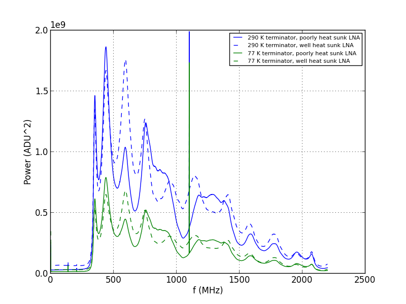
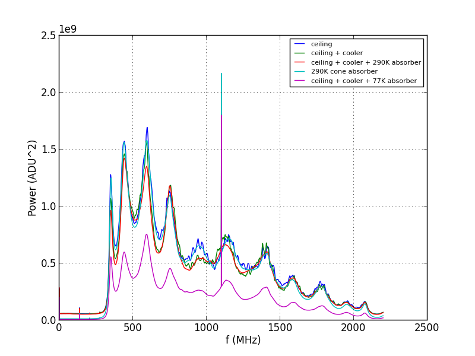

May 18, 2016 - Tsys from cold load measurements
Christopher D. Sheehy
Intro
We measured T_sys using cold loads, both with the horn pointed at beam filling
sources and with terminators. The data and plotting code
is here.
Results
Figure 1 shows the measured spectra with the terminator on the end of a
3" piece of semi-rigid waveuide, at room temp and dunked into LN2. The LNA is
now outside the main enclosure. The first version of the box I made did not
provide adequate heat sinking for the LNA. The box was relatively hot to the
touch, and the LNA must have been very hot. The noise temperature measurement
yielded a higher than expected value because we had just performed this
measurement with the LNA in the main box (well heat sunk) and measured noise
temperatures near the amplifier specs. I improved the heat sinking and the Tsys
measurement improved greatly (see later):
| Fig. 1 - |
Spectra with terminators |
|---|
| |
 |
|
Figure 2 shows the measured spectra for the horn pointing at different
loads. In all cases, the LNA is well heat sunk.
- "ceiling" - horn pointed at ceiling
- "ceiling + cooler" - put empty cooler on top
- "ciling + cooler + 290 K absorber" - put the metal backed AN-72 square in
the cooler
- "290 K cone absorber" - looking at the eccosorb cone 290 K load
- "ceiling + cooler + 77 K absorber" - same as ceiling+cooler+290 K absorber
but now filled with LN2
It's clear that just the presence of the cooler is modifying the signal
greatly. This is not what we want. Just the presence. It's clear that the
ceiling supports many standing waves. It is not plotted, but simply putting
the room temp absorber over the horn cuts down these standing waves and makes
a spectrum nearly the same as the cyan 290 K cone spectrum.
| Fig. 1 - |
Spectra with the horn |
|---|
| |
 |
|
Figure 3 shows the resulting noise temperatures. Heat sinking the LNA
clearly helped a lot and gets us nearly to the LNA spec. Adding the horn makes a
bunch of standing waves, but the mean is clearly higher than with the (well heat
sunk) terminator. We expect some losses in the antenna, which could account for
some. But given that the cooler is clearly not transparent, we should try a
measurement with the zotefoam bucket downstairs.
Conclusions
The LNA has the noise temperature we expect. The cooler cold load has a bunch of
reflections, so we should repeat the measurement with a zotefoam bucket. All in
all, though, the noise temperatures are not terrible, so we are in good shape.
{kind=link}
{kind=link}
{kind=link}